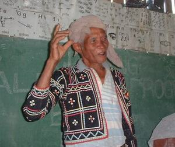

buyag1 
/buyag/
adj.
“elderly”
1.
n.
old person, mature person
Ka buyag iyan ka igngaran te mananap, etew, wey me pinamula naa ne dakel e wey kenad ne batè pad wey mahaan e egkapatey.
Makeyid-u-hid-u naan dè iya ka buyag ne nalilid diyè te masandig.
The old person who was rolled down in the slope was pitiful.
Kenè kew baley-baley te buyag su egkalueran kew.
Don’t insult an old person because you will be cursed.
Eng. old; mature; elderly
Tag. matandâ
Ceb. tigúlang
Ilo.: bakét; lakáy
OCM: Age stratification (561)
DDP: Adult (2.6.4.4), Old person (2.6.4.5)
Online dict status: -
Usage level: F
2.
adj.
decrepit or senile
Syn. mahuyè
Eng. decrepit; senile
Online dict status: -
Usage level: M
3.
adj.
wise or distinguished
O. Syn. masuman-suman
Eng. wise; distinguished; emminent
DDP: Old person (2.6.4.5)
Online dict status: -
Usage level: M
4.
n.
(igbuyag, ig><ø-) elder
Eng. elder
DDP: Old person (2.6.4.5)
Online dict status: -
Usage level: M
adj.
(buyag-buyag, rdpRT-) moderately old
Eng. moderately old; oldish; middle-aged
Online dict status: -
Usage level: M
n.
(kabuybuyahan, kA<>an-rdpCVC-) the old people; ancestors
Ka kabuybuyahan iyan ka me etew ne igbuyag te me etew wey iyan impuunan te sabeka ne tribu te me etew naa ne nangubpè te sabeka ne inged wey nasud.
Kalimu te me kabuybuyahan ta dengan ne nenamatey e.
I miss our forefathers that died long ago.
Mabbulut kun dengan ka me kabuybuyahan ta ra su mahaan egbubunu ke egkalupihan.
Our ancestors long ago were brave because they easily wage war when being oppressed.
Hendei buwa nangugpè dengan ka kabuybuyahan te kaap-apuan ta te me Matigsalug?
Where did the forefathers of our Matigsalug ancestors live?
Wrd.Gloss: old_people
Syn. kaap-apuan
Eng. old people; elders; elderly; forefatyourhers; ancestors
DDP: Old person (2.6.4.5)
Online dict status: -
Usage level: M
v.
for someone (egkabuyag, nabuyag, agent, egkA><ø-) to become older
Eng. older, to become
Online dict status: -
Usage level: M
5.
n.
(egkabuyag, nabuyag, egkA><ø-) to swing using a cane that usually attach to anykind of trees as you stranded at the center
Eng. stranded at the center
Online dict status: -
Usage level: R
6.
v.
for something (egpabuyag, migpabuyag/impabuyag, theme, eg><ø-pA-) to cause someone's appearance to be look older
Eng. older, cause to
Online dict status: -
Usage level: M
7.
v.
for someone (egkabuyahan, nabuyahan, agent, egkA><an-) to become sick or painful
Cult. This would often apply to old people. It is also the reason not to admire a chubby, good-looking child because it might become sick.
Egkabuyahan din e.
He is already in pain.
Online dict status: -
Usage level: L
Updated by: RJH,JLM,RJH,AAA,RJH,TME,QDL,RJH
Last updated: 02/Sep/2016
"buyag" in text "Death of a Young Man"
"buyag" in text "Morning Darkness"
"buyag" in text "Morning Darkness"
"buyag" in text "Morning Darkness"
"egkabuyag" in healthbook "Eg-ay-ayaran ta ka me ngipen ta"
This page last updated: 28-Dec-2019
Copyright © 2009-2014, Matigsalug Language Christian Association, Inc